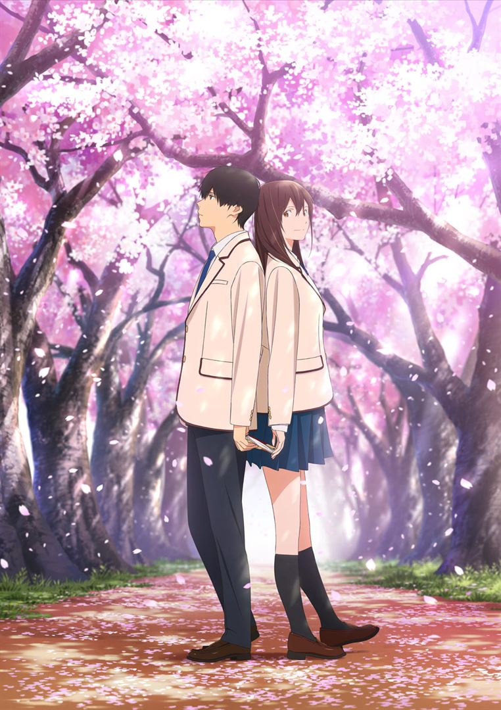

<section class="article-netflix py-5">
  <div class="container">
    <div class="row justify-content-center">
      <article class="col-sm-8">
        <h2>Je veux manger ton pancréas</h2>
        <h5>Un lycéen solitaire découvre la maldie d'une de ses camarades, 11 avril 2021</h5>
        <p>
          « Je veux manger ton pancréas » est un long métrage animé dramatique, d’une durée de 1h48 et réalisé par Shin’ichirô Ushijima.
          <br>
        </p>
        <div class="article_img">
          
        </div>
        <p>
          <strong class="emphase">De quoi ça parle :</strong> Un jeune garçon solitaire tombe par hasard sur le journal intime d’une jeune fille de son lycée. Il y découvre qu’elle n’a plus que quelques mois à vivre. Les deux adolescents décident de se rapprocher et de s’apprivoiser.
        </p>
        <br>
        <p>
          <strong class="emphase">Mon avis :</strong> Un scénario déjà abordé maintes fois mais qui ne laisse pas indifférent.
        </p>
        <p>
          Les personnages sont touchants, attachants et grandissent au fil du long métrage. Leurs caractères les opposent : elle est pleine d’énergie, battante, exubérante et même parfois exaspérante. Lui est réservé, renfermé, comme en plein combat avec son for intérieur.
        </p>
        <p>
          Les couleurs vous font voyager, les dessins sont d’une justesse incroyable et les musiques sont une ode à la joie et à la vie.
        </p>
        <p>
          L’histoire, qui semble classique, vous surprendra et vous tirera des larmes. Elle vous poussera aussi à une réflexion plus personnelle sur les relations humaines pas toujours faciles et vous renverra à votre propre existence et votre vécu.
        </p>
        <p>
          Le titre, aussi surprenant soit-il, prend tout son sens à la fin de ce long métrage où l’on ressent la fusion entre les deux personnages.
        </p>
        <p>
          « Je veux manger ton pancréas » est un tourbillon d’émotions dans lequel vous êtes happés et dont vous ne voulez pas sortir avant d’avoir fini l’histoire de nos deux héros.
        </p>

        <iframe width="560" height="315" src="https://www.youtube.com/embed/J2PJzE8owpg" title="YouTube video player" frameborder="0" allow="accelerometer; autoplay; clipboard-write; encrypted-media; gyroscope; picture-in-picture" allowfullscreen></iframe>

        <p class="signature text-end"><strong>Angèle</strong></p>
      </article>
    </div>
  </div>
</section>
